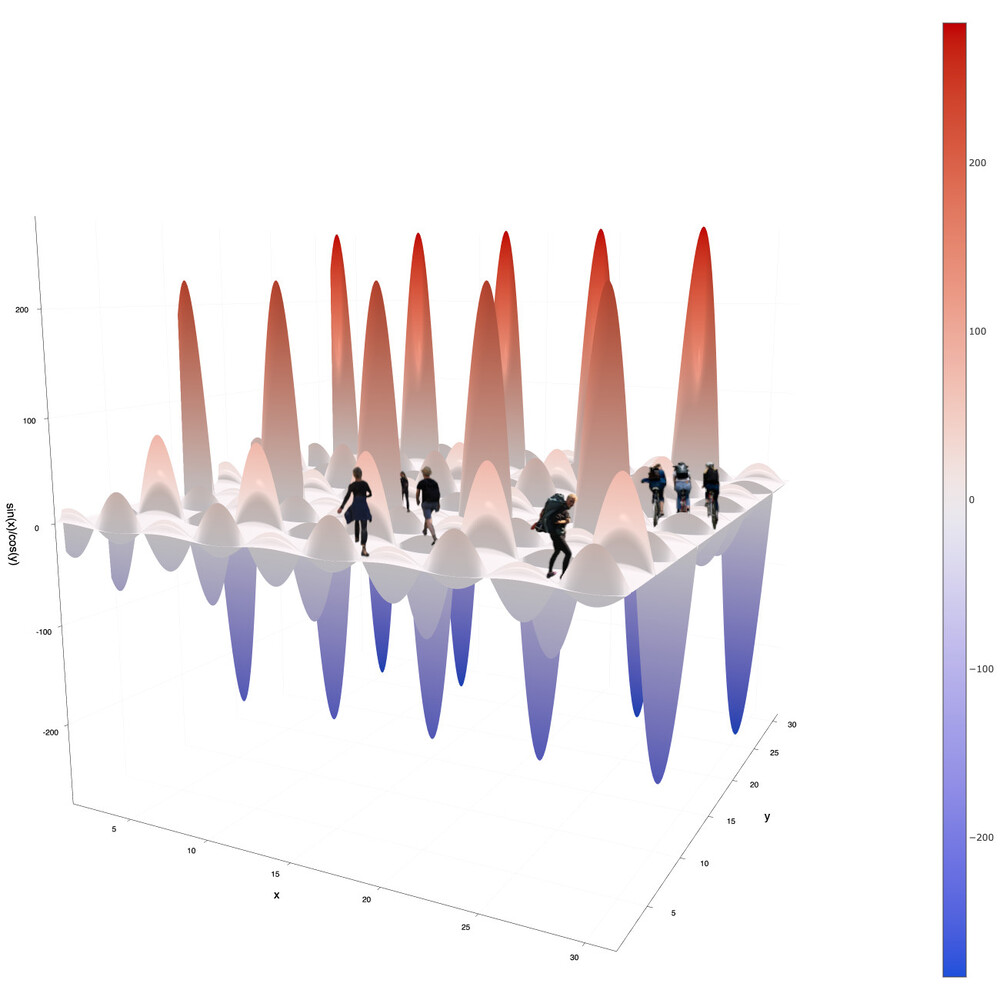
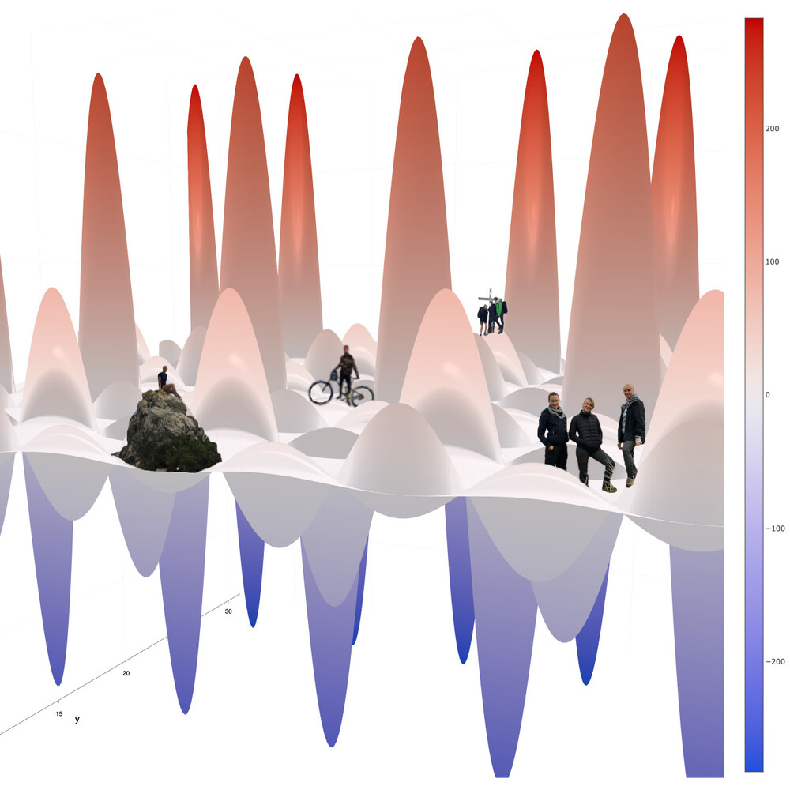

REDESIGNING SCIENTIFIC CONTENT
2022, collage story with photos and plots
Scientific papers and their graphics often look alike: professional, clean, unspectacular.
But can the design of scientific content be altered, also with the goal of making it more intelligible to human perception, without sacrificing complexity?
Here is a possible approach to the problem of designing scientific content by literally discovering the mathematical function
f(x,y) = sin(x)/cos(y):
How can we discover sin(x)/cos(y)?
Let’s have a look on the map!
Let’s have a look on the map!
Alright, let’s go! Is the equipment at hand?

There are apparently different ways to explore and exploit sin(x)/cos(y)!
 Capture moments! Visualize spots!
Capture moments! Visualize spots! Smile!  Wow! Did you look up there? At x=30 and y=15 is a pretty impressive spot!
Someone is up there already! Change perspectives!
Jump of the coordinate system! Be aware of units and quantities!
You will need the legend! Let’s continue discovering sin(x)/cos(y)!